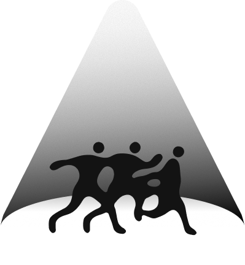
Фирменный стиль / Материалы для работы
Быть собой.
Быть заметным.
Визуальный язык Школы Ижевского Импрова: свет, движение и пространство, в котором можно проявляться свободно.
Оригинальные материалы из комплекта брендирования школы.
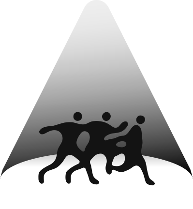
Свет. Движение. Сообщество.01 / Идея
В центре — человек.
Вокруг — поддержка.
Луч прожектора символизирует безопасное пространство: здесь человек получает право быть замеченным и смелость заявить о себе.
Динамичные силуэты передают живую энергию импровизации и свободу движений. Вместе, в одном круге света, они выражают дух принимающего сообщества, где раскрываться не страшно.
По руководству по использованию фирменного стиля школы.
02 / Логотипы
Один характер.
Несколько форматов.
Выбирайте компоновку под носитель.
SVG — для масштабирования, PNG — для быстрых вставок, PDF — для печати.


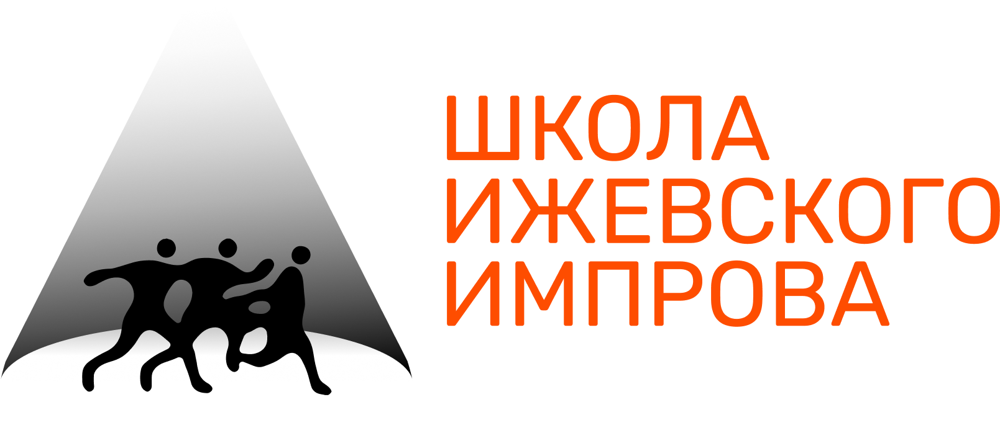


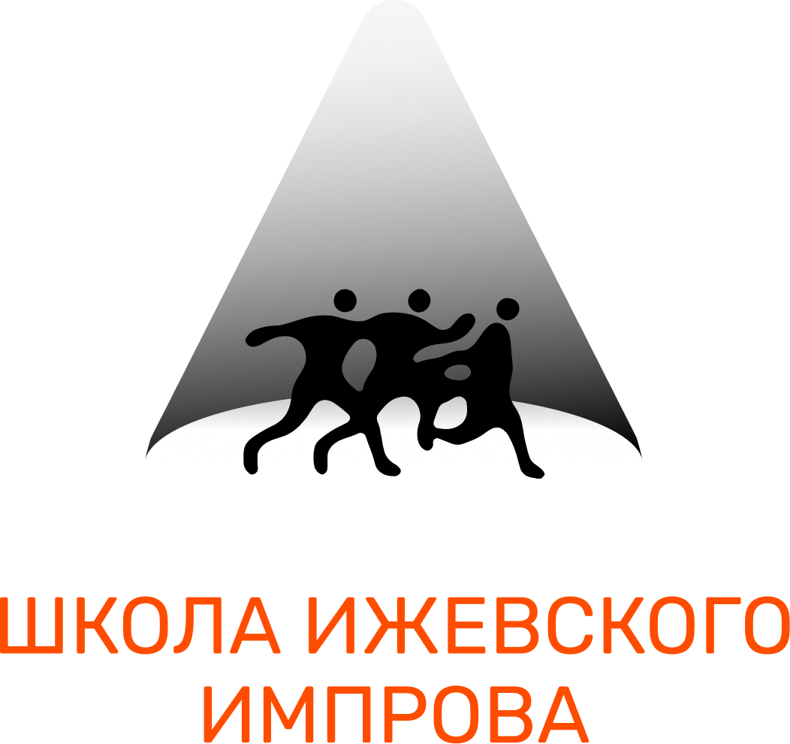


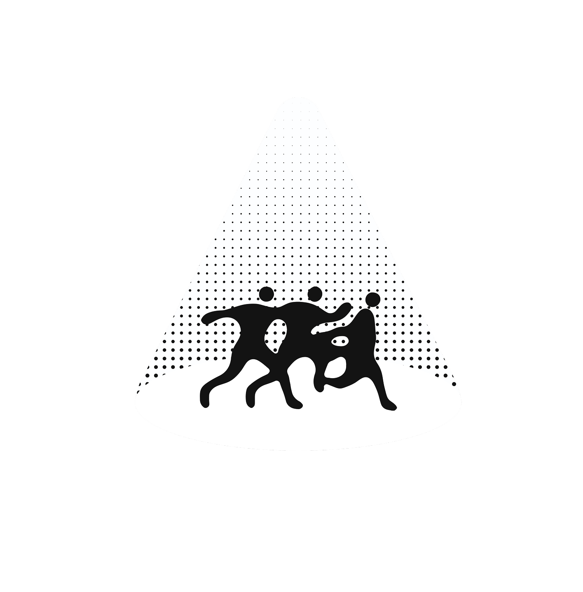


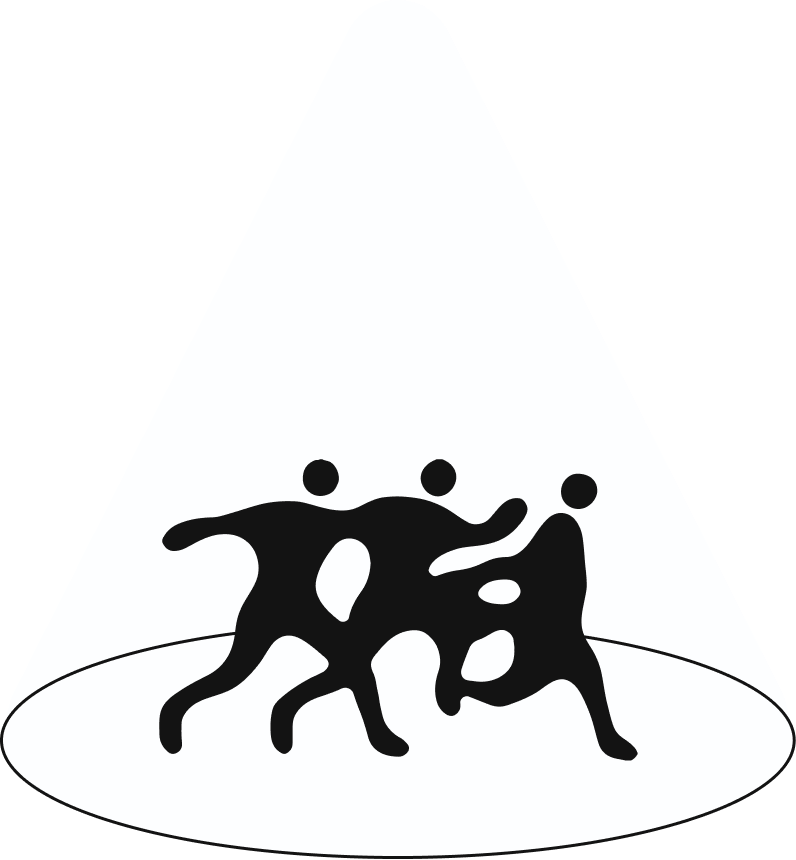


Аватары для соцсетей
Три готовых варианта из фирменного комплекта.


03 / Правила использования
Дайте знаку пространство.
01
Сохраняйте охранное поле
Оставляйте свободное пространство со всех сторон: x равен половине ширины знака. В это поле не должны попадать текст и графика.
02
Сохраняйте пропорции и цвета
Не растягивайте знак, не перекрашивайте его элементы и не добавляйте тени или эффекты, ухудшающие читаемость.
03
Выбирайте контрастный фон
Основной светлый знак используйте на тёмном фоне. Если градиент недоступен технически, возьмите готовую альтернативную версию.
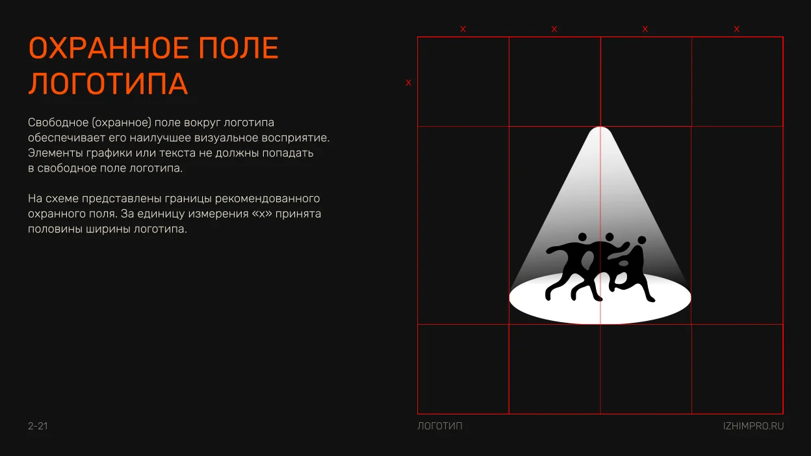
04 / Палитра
Тёмная сцена.
Яркий акцент.
Чёрный
#131313
RGB 19 / 19 / 19
CMYK 0 / 0 / 0 / 93
Кремовый
#EEE7D5
RGB 238 / 231 / 213
CMYK 0 / 0 / 11 / 7
Оранжевый
#FE4D00
RGB 254 / 77 / 0
CMYK 0 / 70 / 100 / 0
Значения приведены из брендбука. Для печати согласуйте цветопробу с подрядчиком.
05 / Типографика
Rubik
Один шрифт, три начертания.
Иерархия помогает быстро считывать главное.
Rubik Medium
Заголовки · 500
Смелость быть в моменте
Rubik Regular
Подзаголовки и основной текст · 400
Импровизация начинается с внимания к себе и партнёру.
Rubik Light
Сноски и комментарии · 300
Место для нового опыта и неожиданных открытий.
06 / Графика
Игра света и тени.
Лучи и круги с градиентной или прозрачной заливкой. Накладывайте фигуры друг на друга, сохраняя спокойный фон и читаемость текста.


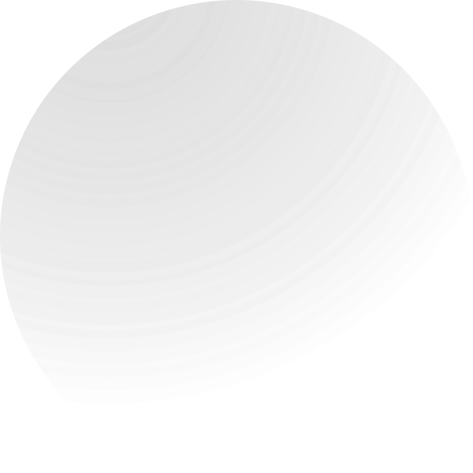


Как собирать макет
Выстраивайте иерархию «заголовок → подзаголовок → сноска»; рекомендуемая разница размеров — примерно вдвое. Выделяйте заголовки капсом и фирменным цветом. Оставляйте много воздуха, используйте фирменную графику для фона. Скругление крупных элементов — 16 px, кнопки — полностью округлые.
07 / Применение
Стиль в жизни.
Примеры из брендбука: от анонсов занятий до мерча. Нажмите на изображение, чтобы рассмотреть его крупнее.
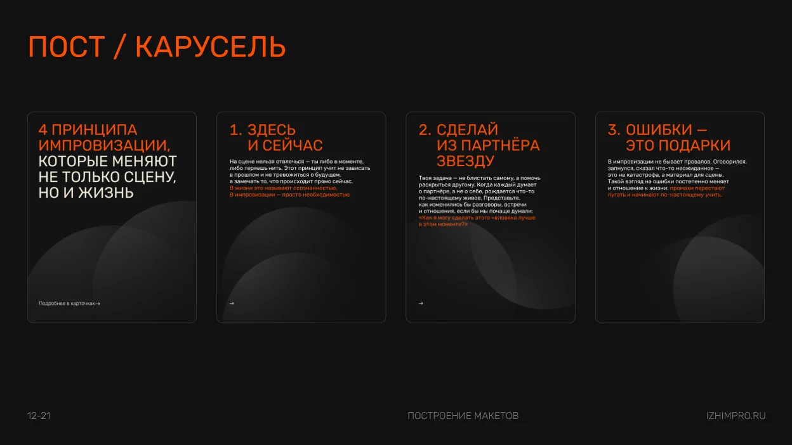
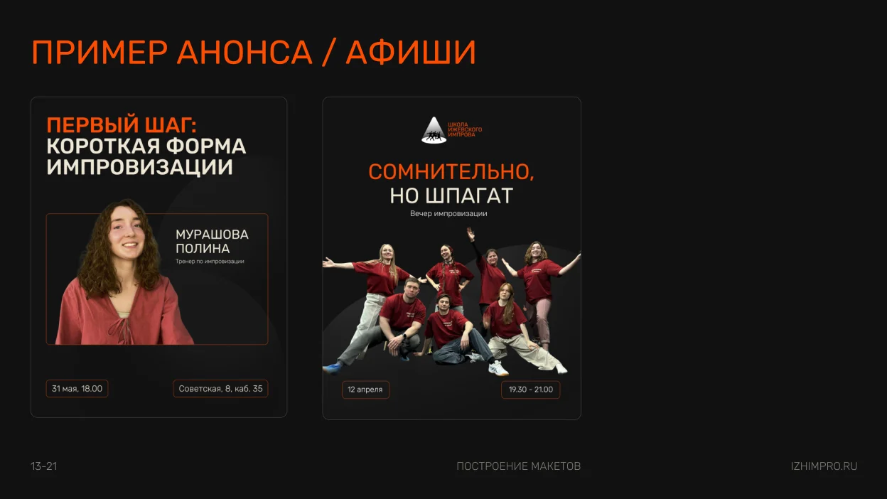
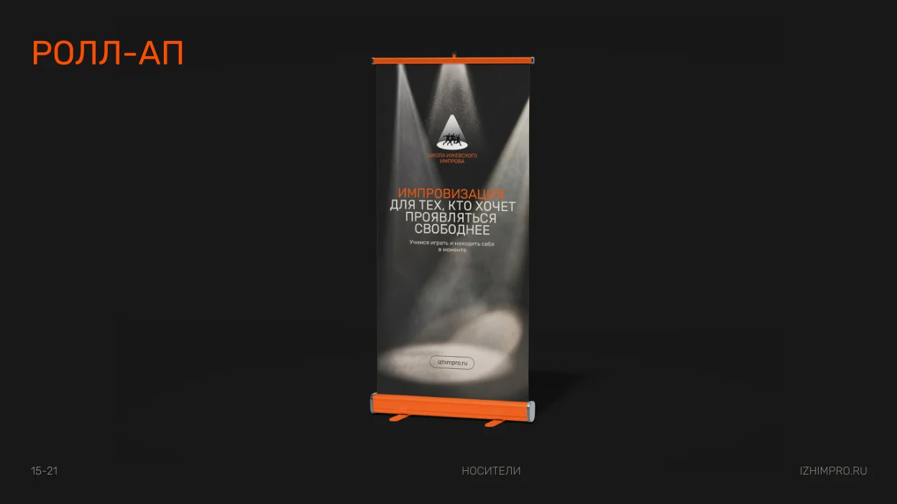
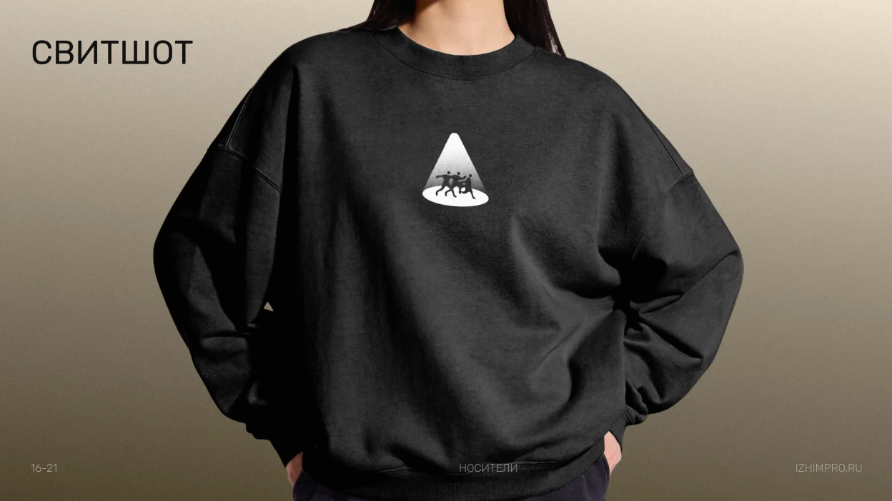
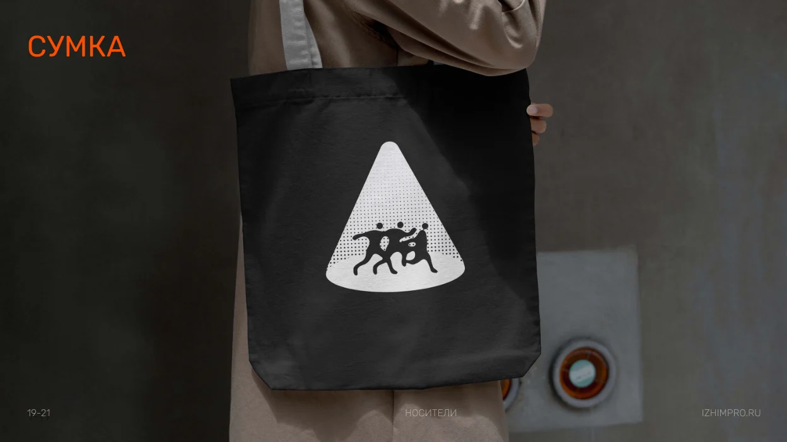
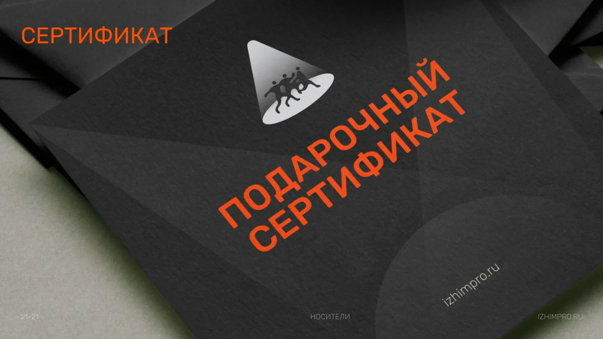
Всё под рукой
Передайте стиль дальше.
В архиве — логотипы, аватары и фирменная графика.
В брендбуке — полные правила и примеры применения.